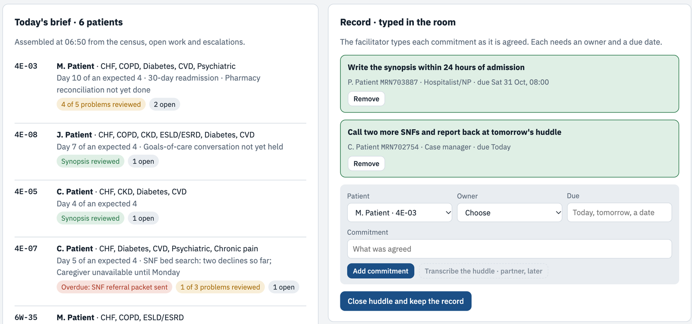

One team
Five disciplines, from physicians to pharmacists, are accountable for the same patients.
- Hospital medicine and nursing
- Case management and social work
- Pharmacy
Juliana brings three things together: one interdisciplinary team for your most complex patients, one shared plan for each of them, and one system that keeps the model running the same way every day.
Your team runs the program. Juliana brings the operating model, nearly a decade of clinical know-how and the platform that keeps it running the same way every day.
Teams change with each admission
One team that knows the patient
Five disciplines, from physicians to pharmacists, are accountable for the same patients.
Daily huddles, shared care plans and named owners clear barriers and smooth transitions.
Juliana IQ finds the right patients and keeps the model running consistently.
Your clinicians stay in charge. Juliana IQ recommends; your team accepts, edits or declines. Every clinical decision stays with your team.
The team practices hospital medicine the way a primary care team practices primary care: it is the patient's own team, across admissions.
One interprofessional team is responsible for its enrolled patients across admissions and between them.
Every discipline works from the same problems, plan, reasoning and work in progress.
Shared goals, shared knowledge and mutual respect. Physicians, nurses, case managers, social workers and pharmacists shape complex decisions as one team.
The same team is the hospital team at admission and follows its patients through transitions, post-acute care and home.
The team tracks its panel's admissions, length of stay, readmissions and emergency department visits.
| Aspect of care | Care organized by shift and service | The Juliana model |
|---|---|---|
| Who cares for the patient | The clinicians on shift for this stay | The same team at every admission |
| How decisions are made | Discipline by discipline, in sequence | Together, across disciplines, at a daily huddle |
| The plan | Rebuilt at each admission | Carried across stays, transitions and home |
| What the team tracks | This stay and today's discharges | The panel's admissions, stays and readmissions over time |
Juliana IQ applies the criteria to your data, and your clinical leaders set the final panel and confirm every enrollment.
Psychiatric and substance use conditions do not establish eligibility, and the team cares for them alongside everything else. Active cancer is excluded by default because oncology teams lead that care.
IQJuliana IQ
Built on the expert knowledge and know-how of the founding program, Juliana IQ turns nearly a decade of practice into the daily tools your team works from, alongside your EHR, in both Juliana Operate and Juliana Enable.
What is built in
Cohort identification and targeting: finds eligible patients, sets the priority order and sizes the panel to your beds.
Shared insight and care plans: one synopsis and plan per patient, every line sourced.
Consistent operations and performance: the morning huddle, one board and fidelity tracking.

IQ Understand gives each patient a problem-by-problem synopsis, with every line linked to the record it came from. A clinician confirms each problem before the team works from it.
Illustration with synthetic data.
Some capabilities are in development, and not all features are available at go-live.
See what the model could mean for your hospital, built from your own data.